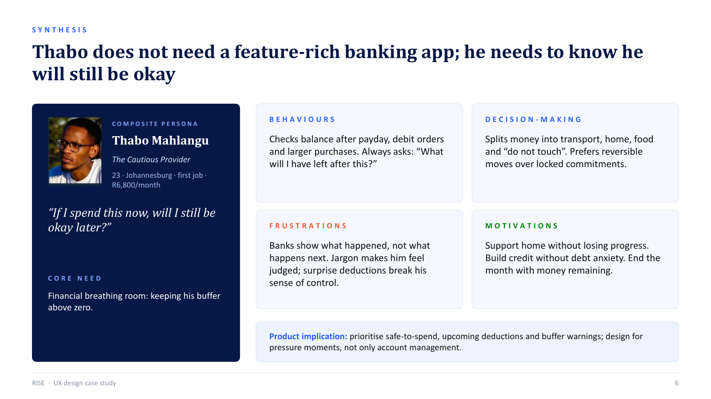
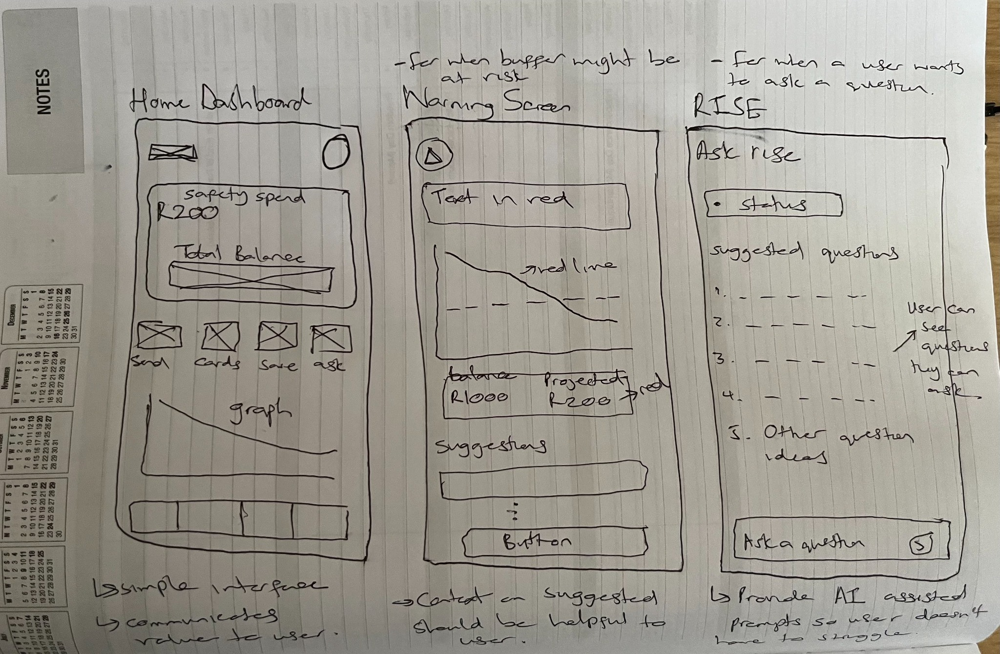
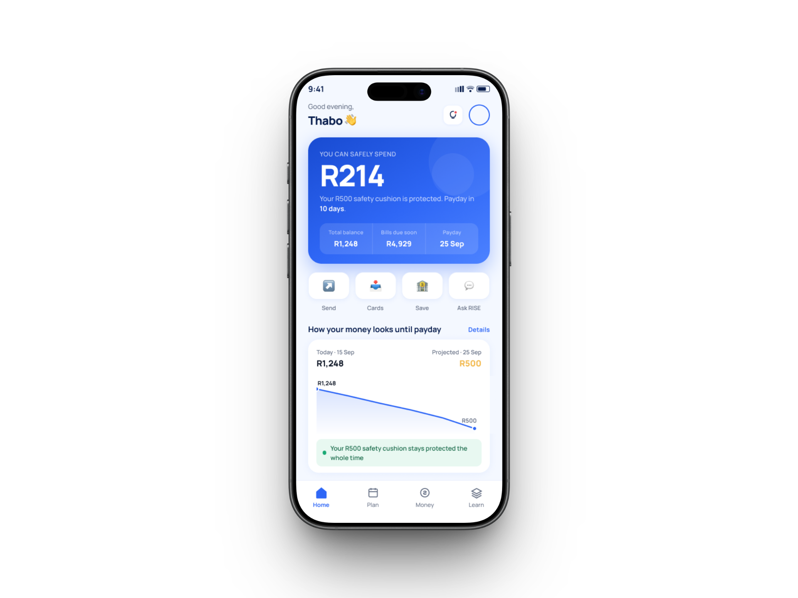
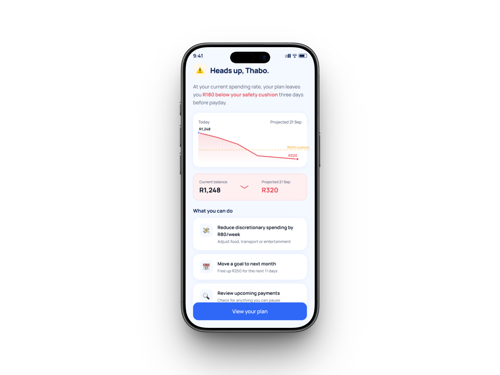

Little margin for error
Transport, food, debit orders and family support compete for the same income.
A financial wellbeing concept helping young earners see upcoming costs and protect money until payday.
I used secondary research and a composite persona to shape a concept around a projected Buffer, timely warnings and practical guidance.
Scope and evidence: Concept informed by three secondary sources and a composite persona. No primary interviews or usability testing were conducted, so the proposed benefits remain hypotheses to test.
A balance shows what is available now, not what is already committed. RISE brings upcoming costs into view without presenting forecasts as guarantees.
The composite persona, Thabo, represents a 23-year-old first-job earner in Johannesburg, earning R6,800 a month. He is a research-informed profile, not an interview participant.
Transport, food, debit orders and family support compete for the same income.
He checks his balance before spending and wants to know what upcoming costs will leave him.
He wants to support his family and make progress, but financial jargon can make asking for help difficult.

I reviewed three sources on money stress, digital financial confidence and young people’s financial outlook. Together, they framed the question: how can someone tell what is safe to spend before payday? No primary interviews or usability tests were conducted.
Three sources offered different signals: financial stress, digital skills and confidence about the future.
The composite persona connected those signals to bills, family commitments and the need for a buffer.
Hypothesis: showing upcoming costs beside the current balance could help people judge what is safe to spend.
These figures measure different things and should be read separately.
of South Africans under 35 reported financial anxiety or stress.
Debt Rescue Money Stress Tracker, 2026 · Reported as up 18% year-on-year.reported confidence in their digital financial skills.
SA Social Media Landscape report · As cited in the RISE research.reported uncertainty about building a stable financial future.
Old Mutual Youth Generational Wealth Survey · As cited in the RISE research.South Africa · percentage of the youth labour force · scale shown from 0% to 50%
Sources: Debt Rescue Money Stress Tracker (2026), SA Social Media Landscape report, Old Mutual Youth Generational Wealth Survey and youth unemployment figures cited in the RISE research. These are contextual signals, not proof that all young earners share the same experience.
Research focus: understand how young earners divide income, manage uncertainty and balance spending, saving and upcoming costs.
Interpretation: a balance does not explain what that money still needs to cover.
Opportunity: show upcoming expenses beside a projected Buffer.
The Buffer is breathing room for essentials when plans change, not simply spare cash or a savings target.
Opportunity: give the Buffer a clear role and flag when it may run low.
Jargon or judgement can make people less likely to ask for help.
Opportunity: offer private, plain-language support.
Missing or changing expenses can make projections inaccurate.
Opportunity: show assumptions and let people correct estimates.
Proposed journey based on secondary research; not observed or validated.
| Stage | Actions and touchpoints | Mental model / self-talk |
|---|---|---|
| 01 Onboard | Add payday timing, income and known recurring expenses. | “Why do you need this, and can I trust it?” |
| 02 Check in | Review balance, upcoming expenses and projected Buffer. | “How much of this money is actually available?” |
| 03 Spot risk | See a warning that a planned spend may create a shortfall before payday. | “Will I run out before I get paid?” |
| 04 Choose | Compare options, adjust an expense or correct an upcoming cost. | “What can I change without making things harder?” |
| 05 Learn or ask | Use a contextual lesson or ask a money question. | “Can I ask this without feeling stupid?” |
| 06 Review | Check the projected Buffer and remaining money before payday. | “Did my plan hold up, and what should I adjust next month?” |
| Emotional arc | From uncertainty towards a greater sense of control 😕UnsureOnboard 🤔CautiousCheck in 😟WorriedSpot risk 🧐EvaluatingChoose 😌ReassuredLearn or ask 🙂In controlReview | |
The proposed journey moves from context-first onboarding to a projected Buffer, early warnings and timely guidance.
I focused the interface on two moments: checking what is safe to spend and spotting a shortfall before payday.


Decision: present the Buffer as protection for everyday essentials, not another savings target.
Why: the persona needs financial breathing room between paydays.

Decision: warn users before spending may reduce the Buffer, then show the likely impact and options.
Why: a fixed balance alert ignores upcoming bills. A contextual warning considers what is still due.
Show upcoming expenses beside the current balance.
Make protected money visible and understandable.
Offer a simple, judgement-free way to ask questions.
Introduce guidance when it can help with a decision.
Understand the user’s context before giving suggestions.
Show forecast assumptions and let users correct them; estimates are not guarantees.
Use supportive language without blaming the user.
The concept combines a projected Buffer, contextual learning and low-pressure support. These are design hypotheses, not proven outcomes.
Forecasts need visible assumptions and user control. Guidance should preserve dignity and choice.
North-star metric: money remaining in the Buffer the day before payday. This is closer to the intended outcome than sign-ups or app opens, but must be tested with real users and their circumstances.
| Priority | Measure | What it tells us | How to interpret it |
|---|---|---|---|
| North star | Buffer balance > R0 before payday | Is any protected money left the day before the next payslip? | Core outcome signal; interpret alongside the user’s essential needs and circumstances. |
| Supporting | Buffer survives through the month | Does the protected amount remain available instead of running out early? | Helps assess whether the buffer is useful across the pay cycle. |
| Secondary | Payday app opens | Do users return to review their finances? | Engagement signal only; not proof of improved financial wellbeing. |
| Secondary | Notification attention | Are contextual warnings noticed? | Pair with comprehension and Buffer outcomes; attention alone is not success. |
Proposed measure only; no outcome or target has been validated with users.